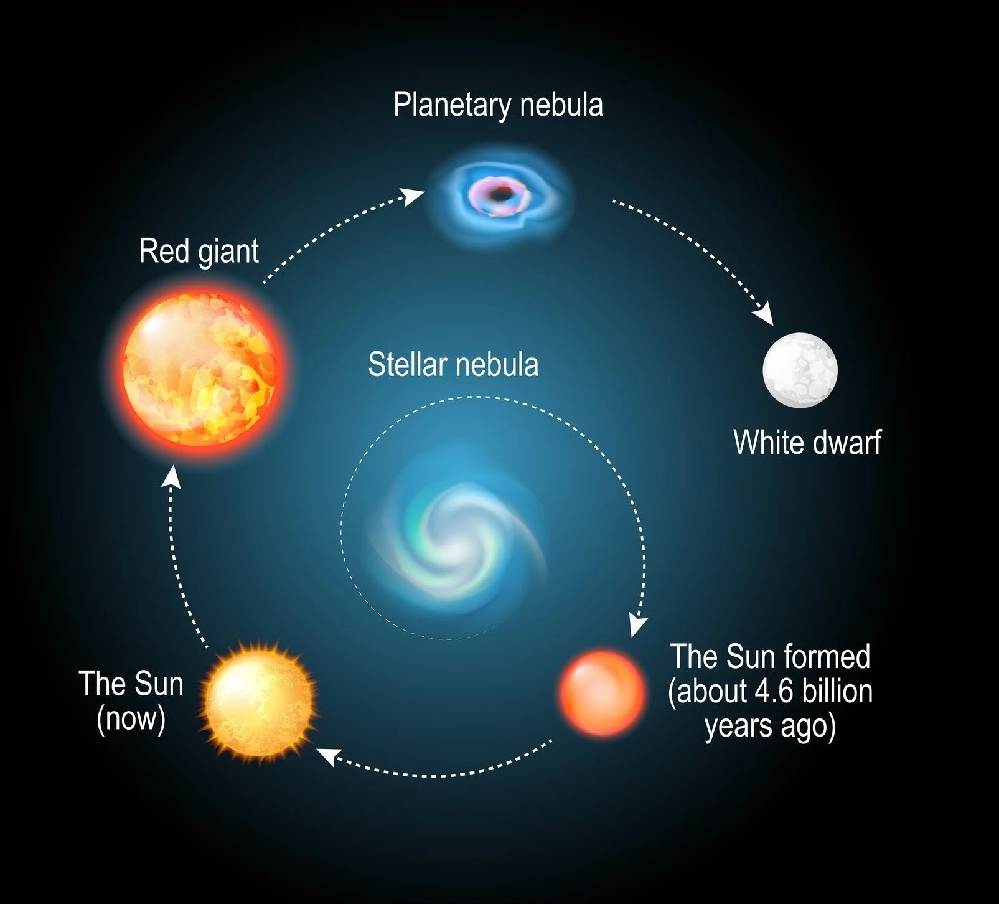

Sun, the heart of our Solar System
The Sun is an enormous, searing ball of plasma composed mostly of hydrogen and helium, it generates light and heat through nuclear fusion. Our Sun is about 4.6 billion years old and is located at the center of our Solar System, without it life on Earth would decease to exist. Every single astronomical object in our Solar System (planets, asteroids, comets and so on) revolves around the Sun. If you thought that the temperature on Venus was hot, it is nothing compared to the temperature of 15 million degrees Celsius that the Sun generates. To put it in comparison as to just how massive the Sun is, you could fit 1.3 million Earths inside it. Despite this, our Sun is in fact nowhere near as large as some of the other stars in the universe. For example, there are stars that are over 100 or 1000 times larger than ours such as red giants which our star will eventually turn into as well.
The life cycle of our Sun
4.6 billion years ago the Sun was formed as a result from the gravitational collapse of a region within a huge molecular cloud. Currently our Sun is going through its main sequence which will still last for about 5 billion years. After this the Sun will have exhausted the hydrogen in its core and the Sun's outer layers will begin to expand whilst the core itself shrinks, causing it to become a red giant. During this time the Sun cools down and grows massively in its size for the next billion years, likely engulfing Mercury, Venus and maybe even Earth. After enough time has passed a helium fusion takes place in the core which might last somewhere in between a few million to 100 million years. What follows after this is the outer layers of the red giant are being ejected into space, creating a colorful shell of gas and dust known as a planetary nebula. This is expected to last about half a million years at best.
Eventually the dying star's core collapses which turns it into a white dwarf. White dwarves tend to be roughly the size of Earth with only about a temperature of 100,000 degrees Celsius. For the next billions of years the white dwarf continues to cool off until the last shimmer of light fades away and all that remains from our once glorious Sun is a cold, dark object known as a black dwarf. Worth noting that black dwarves are only a theoretical concept rather than an actual observed object as the sheer amount of time it would take for a star to become a black dwarf would take longer than the universe is old.
